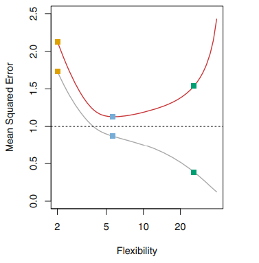

Double Descent in Deep Learning
The classical U-Shape observed when analyzing the performance (usually some loss function) of a model on testset is a fundamental property that holds regardless of the particular data set at hand and regardless of the statistical method being used.
However, recently Deep Learning research has observed that as they give more flexibility to a deep learning model (usually the size), the performance first gets worse and then gets better. This phenomenon is denoted as Deep Double Descent, which is somewhat surprising. Last weekend, I ran into a lovely explanation from a statistical point of view of the Double descent phenomeon from @daniela_witten one of the authors of the well-known ISLR book.
I put here some resources related with the issue:
- An article from OPENAI about the observed Double Descent in CNN and Restnet networks.
- One of the research paper describing the Double Descent phenomenon.
- An statistical explanation of the phenomeon from @daniela_witten in the form of a twitter thread.
The Bias-Variance Trade-Off & "DOUBLE DESCENT" 🧵
— Daniela Witten (@daniela_witten) August 9, 2020
Remember the bias-variance trade-off? It says that models perform well for an "intermediate level of flexibility". You've seen the picture of the U-shape test error curve.
We try to hit the "sweet spot" of flexibility.
1/🧵 pic.twitter.com/HPk05izkZh